Fecha: 12/06/2026
San Roke Plazan
Fecha: 25/05/2026
Lobianon
Fecha: 11/05/2026
Un recorrido por el barrio con la mirada puesta en nuestras necesidades y posibles mejoras
Fecha: 27/04/2026
Lobianon
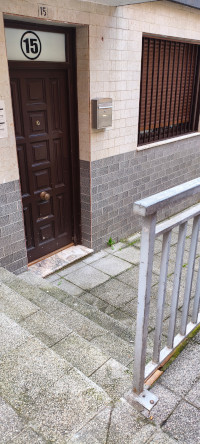
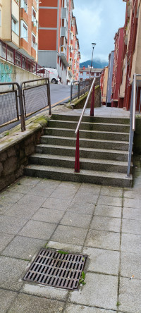
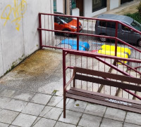
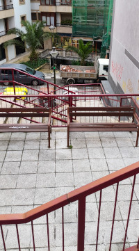
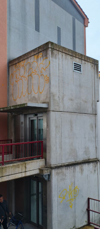
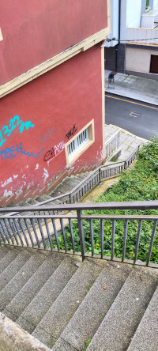
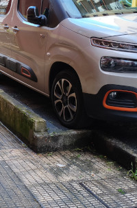
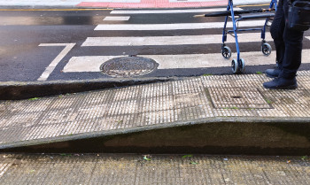
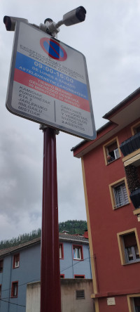
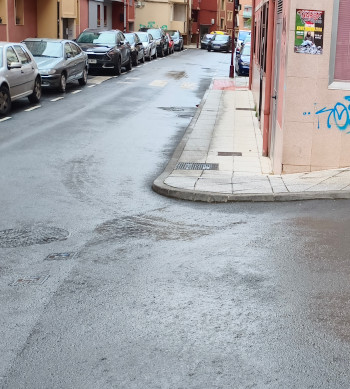
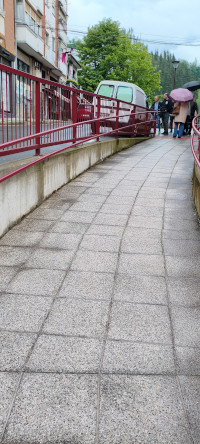
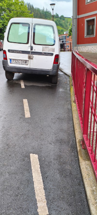
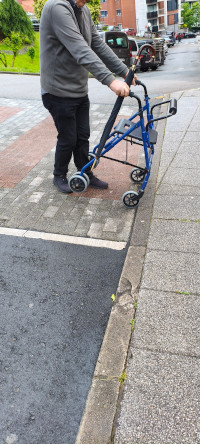
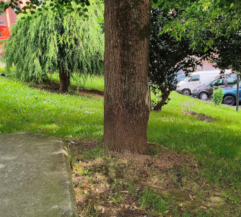
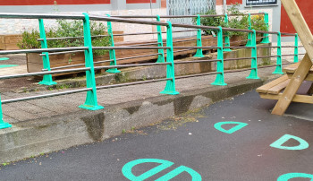
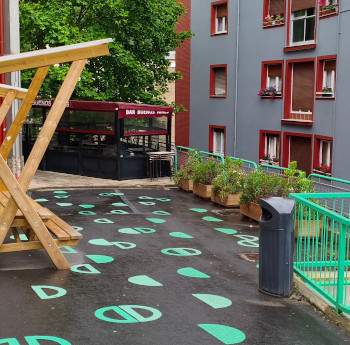
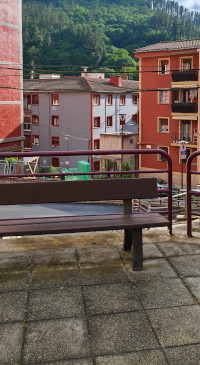
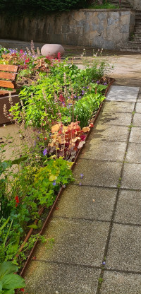
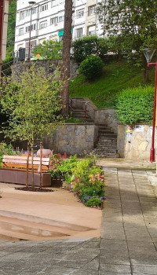
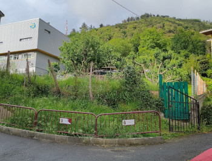
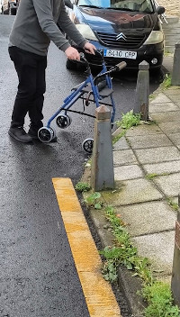
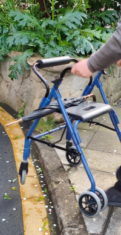